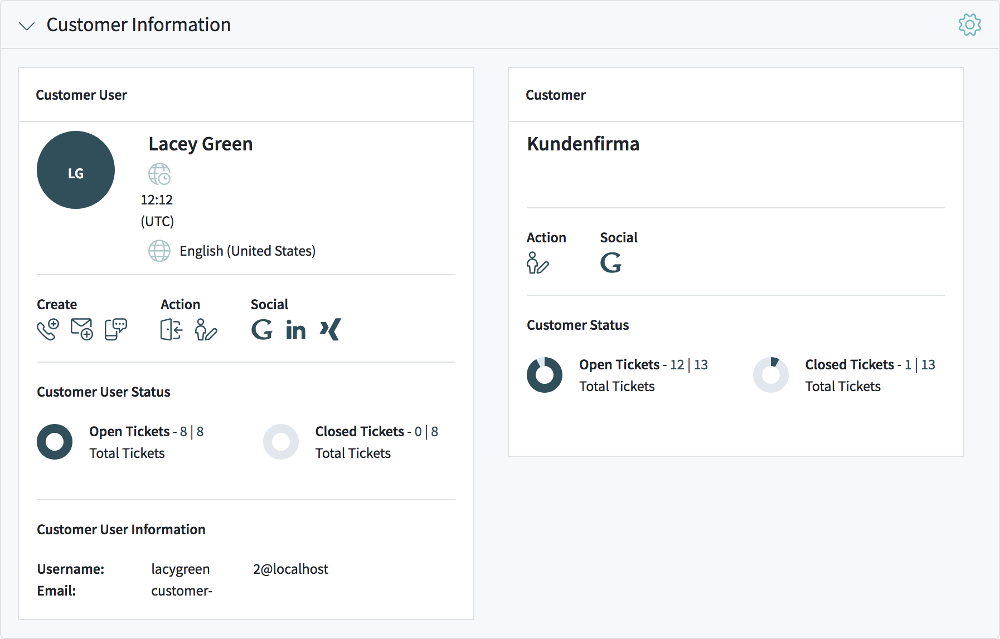
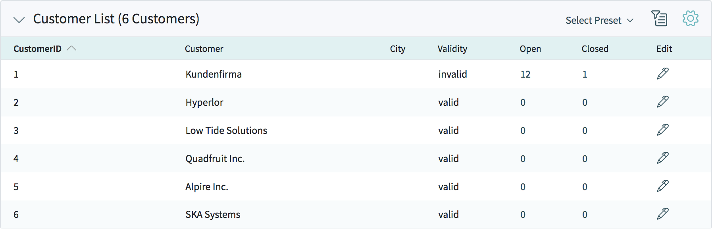
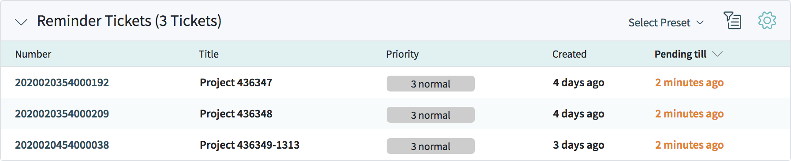
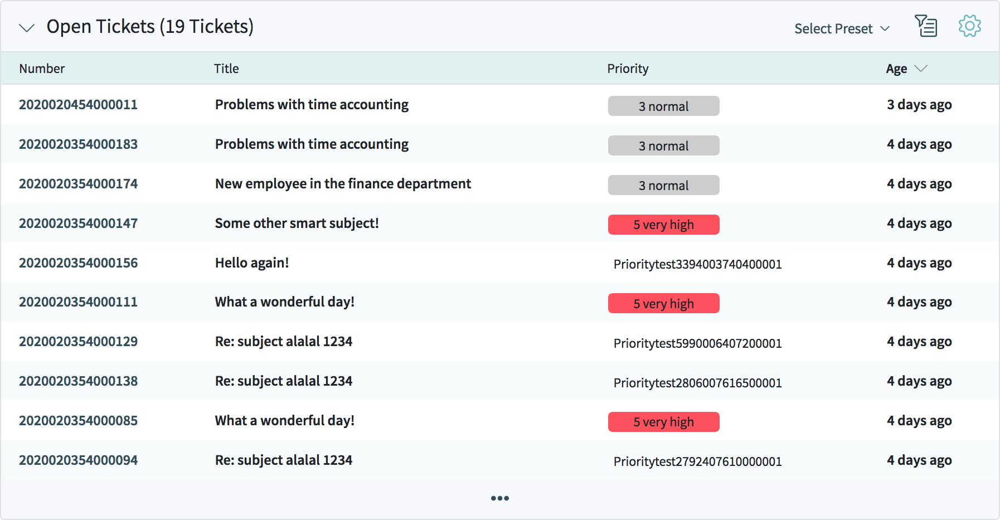
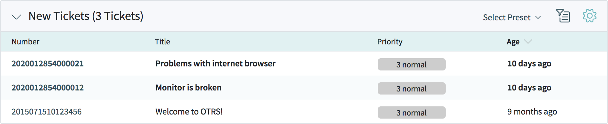

Customers¶
Add Customer¶
To add a customer user:
- Choose a data source

Select Data Source
- Fill in the required fields.
- Click on the Save button.

Create Customer
- Data Source
- TODO
- Customer Information
Customer
CustomerID
Valid
- Address
Street
ZIP
City
Country
- Miscellaneous
URL
Comment
Customer List¶
The customer list shows customers and information about this customers, i.e. how many open tickets or how many closed tickets.
Customer List Default
Clicking the pencil symbol in the column Edit opens the view for editing the customer details.
Customer Detail View¶
Customer Detail View Widgets¶
- Customer Information Widget
This widget shows information about the customer presented in a card.
Customer Information Widget
The customer card shows the number of open and closed tickets of the customer. The Action section contains icons to directly edit the customer. The section Social contains links to the social channels of the customer.
- Customer User List Widget
- 
Customer User List Widget
- Reminder Tickets Widget
This widget lists the pending tickets. Pending tickets are set for later work by the agent, and the reminder time has been reached.
Reminder Tickets Widget
This widget supports Widget Filter and Widget Configuration.
- Escalated Tickets Widget
This widget lists the escalated tickets. Escalated tickets are after the time set in service level agreement, and therefore needs to be worked on them immediately.
This widget supports Widget Filter and Widget Configuration.
- Open Tickets Widget
This widget lists the open tickets. Open tickets represent the current work done by the agent.
Open Tickets Widget
This widget supports Widget Filter and Widget Configuration.
- New Tickets Widget
This widget lists the new tickets. New tickets are created by customer users, and no agent is started to work on them at the moment.
New Tickets Widget
This widget supports Widget Filter and Widget Configuration.